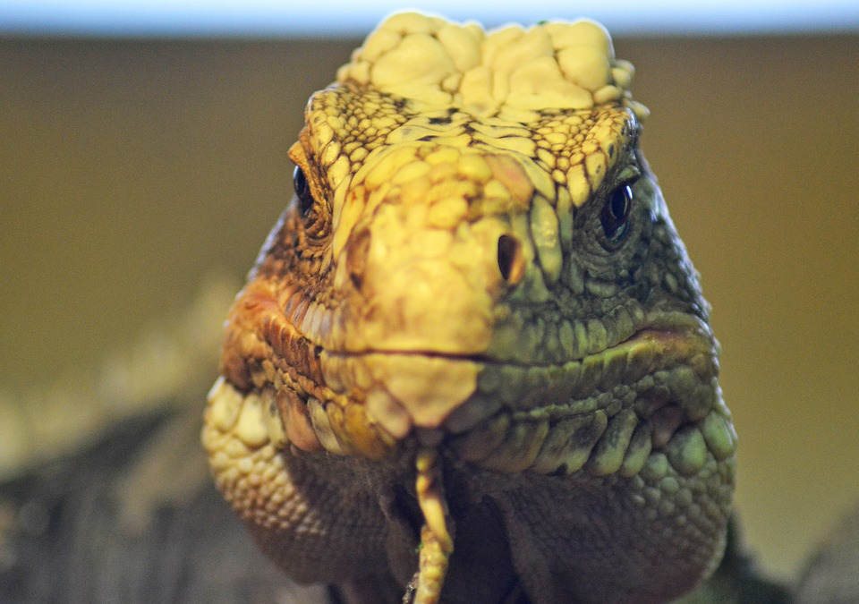
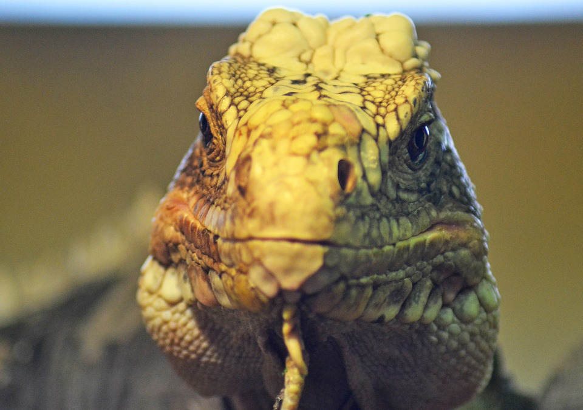

Mark Zuckerberg
While we humans are all animals in our own right, the creature known scientifically
as Mark Zuckerberg is anything but human. Some call Mark an alien, others a
lizard yet others say a robot, I say he's all the above.
On the left, there's a picture of a cold reptilian creature with dark unfeeling eyes
and on the right,
a lizard. As you can see the similarities are uncanny.
 

While the species known as Mark Zuckerberg or Zuk for
short have had his human appearances for most of his lifetime,
the recent increase in 5G network having left his health in decline
as you can see from the picture below where Zuk's skin which is essential
for him to camouflage in with the human race
has progressively become an unhealthy shade of blue.
For just a penny a day you too can support Zuk through this hard
time and prevent this first alien, reptile cyborg from going extinct.
Call 1-800-HELP-ZUK to learn how you can help to do more.
Want More Totally True and Accurate Animal Facts?
Back to Home